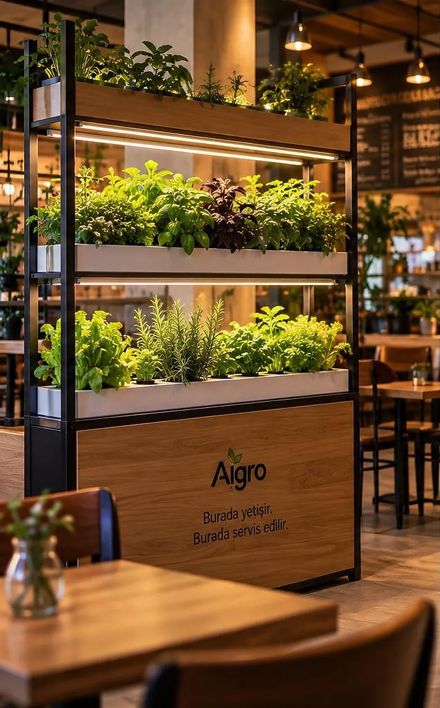
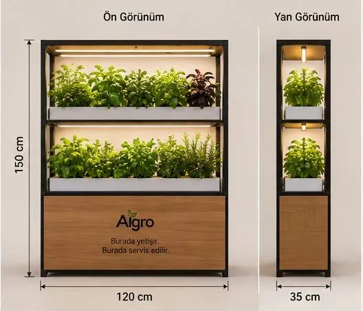
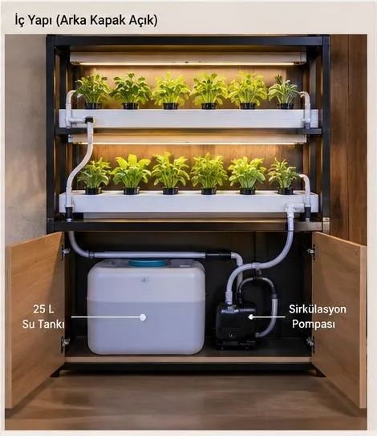
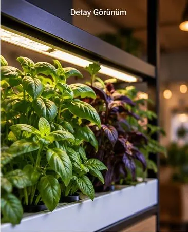
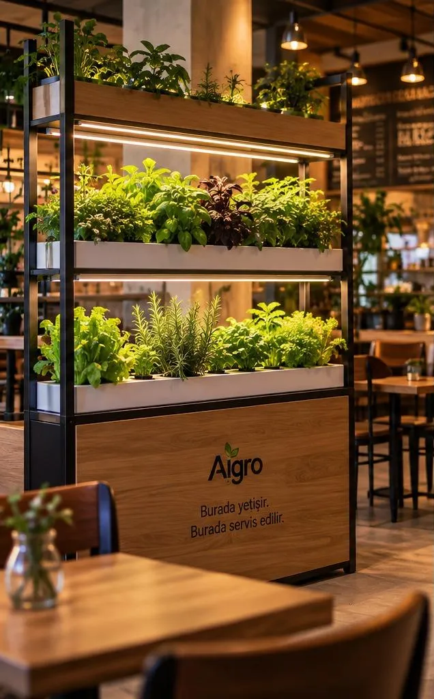

Kafeler
Yeşillik mekânın ortasında büyür; müşteri tazeliği görür.

Kafe ve restoranlar için premium topraksız yetiştirme modülü. Yeşillik müşterinin gözü önünde büyür, masaya taze gelir.

Konsept
Müşteri yeşilliğin önünde yetiştiğini görür, mutfak taze ürünü raftan alır. Modül hem bir üretim alanı hem de mekânın görsel imzasıdır.
Görseller konsept tasarımdır
Modülün yapısı
Üstte iki katlı NFT kanallar ve her katın üstünde bitki yetiştirme LED'i; alt dolapta su tankı ve sirkülasyon pompası.



Görseller konsept tasarımdır; parçalar örnek olup Ar-Ge sürecinde netleşecektir.
Ne yetişir
Modül, mutfakta sık kullanılan aromatik ve yapraklı bitkiler için tasarlandı.

Kimler için
Yeşillik mekânın ortasında büyür; müşteri tazeliği görür.
Mutfak aromatik bitkileri raftan, ihtiyaç anında alır.
Otomasyon ve ürünleştirme sürecine katkı vermek isteyen kurumlar.

Mekânınızda pilot ya da Ar-Ge iş birliği için bizimle iletişime geçin.